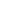

<!DOCTYPE html>
<html>
	<head>
		<style>
			@font-face {
				font-family: 'Gotham';
				src: url('./Gotham Black Regular/Gotham Black Regular.ttf');
			}

			body {
				padding: 0;
				margin: 0;
				font-family: Gotham;
				color: white;
				--beige: #fee28a;
			}

			.beige {
				color: var(--beige);
			}

			@keyframes fadeIn {
				from {
					opacity: 0;
				}
				to {
					opacity: 1;
				}
			}

			#footer > div {
				position: absolute;
				top: 0;
				left: 0;
				opacity: 0;
				overflow: hidden;
				width: 1280px;
				padding-top: 1px;
				height: 30px;
				font-size: 22px;
				line-height: 32px;
				text-align: center;

				border-top: solid 1px white;
				display: none;
			}

			#footer .ctwc {
				border-top: solid 1px var(--beige);
				background: linear-gradient(#2a2a2a, #181818);
			}

			#footer .youtube {
				background: linear-gradient(#bd171d, #ac0c0f);
			}

			#footer img {
				vertical-align: middle;
				margin-top: -4px;
				padding-right: 4px;
			}

			#footer .twitch {
				background: linear-gradient(#593785, #4c297e);
			}

			#footer .twitch img {
				margin-top: -3px;
			}

			#footer .facebook {
				background: linear-gradient(#445999, #304b89);
			}

			#footer > div.active {
				display: block;
				animation: fadeIn ease 1s;
				animation-fill-mode: forwards;
			}
		</style>
	</head>
	<body>
		<div id="footer">
			<div class="ctwc active">
				<span class="beige">CLASSIC TETRIS®</span>
				<span class="system">NTSC</span>
				&nbsp;&nbsp;&nbsp;&nbsp;&nbsp;&nbsp;&nbsp;&nbsp;
				<span class="event beige">SINGAPORE CHAMPIONSHIP 2021</span>
				&nbsp;&nbsp;&nbsp;&nbsp;&nbsp;&nbsp;&nbsp;&nbsp; on NESTRISCHAMPS
			</div>

			<div class="youtube">
				
				YOUTUBE.COM/CLASSICTETRIS
			</div>

			<div class="twitch">
				
				TWITCH.TV/CLASSICTETRIS
			</div>

			<div class="facebook">
				
				FACEBOOK.COM/CLASSICTETRIS
			</div>
		</div>

		<script type="text/javascript">
			const CYCLE_DURATION_S = 10;

			// 1. get query string args and do initial setup
			const QueryString = new URL(location).searchParams;
			const ctwc = document.querySelector(`#footer .ctwc`);
			const system = QueryString.get('system');
			const event = QueryString.get('event');
			const cycle_seconds = QueryString.get('cycle_seconds');

			if (system !== null) {
				ctwc.querySelector('.system').textContent = system;
			}

			if (event !== null) {
				ctwc.querySelector('.event').textContent = event;
			}

			const footers = ['ctwc', 'youtube', 'twitch', 'facebook'].map(name =>
				document.querySelector(`#footer .${name}`)
			);

			let curr_index = footers.length - 1;
			let curZIndex = 1;

			function run() {
				const old_footer = footers[curr_index];
				old_footer.style.zIndex = ++curZIndex;

				curr_index = (curr_index + 1) % footers.length;

				const new_footer = footers[curr_index];
				new_footer.style.zIndex = ++curZIndex;
				new_footer.onanimationend = () => {
					old_footer.classList.remove('active');
				};
				new_footer.classList.add('active');
			}

			let cycle_duration_s = CYCLE_DURATION_S;

			if (/^\d+$/.test(cycle_seconds)) {
				cycle_duration_s = parseInt(cycle_seconds, 10);
			}

			setInterval(run, cycle_duration_s * 1000);
		</script>
	</body>
</html>
